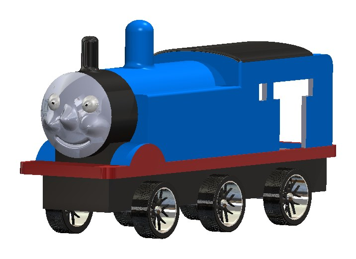
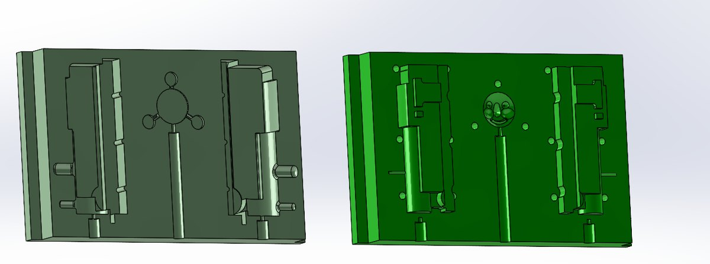
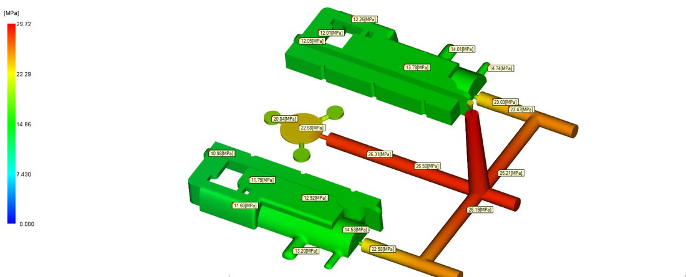
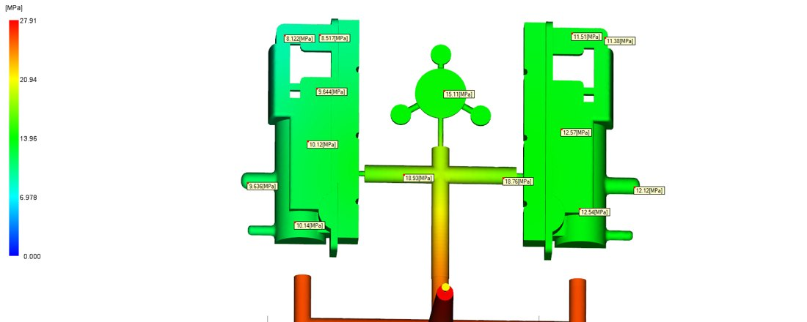

In progress
Injection-molded Hot Wheels car
Students at a local elementary school designed a Hot Wheels car, Thomas the Tank Engine, and our team is manufacturing it. I worked on the CAD model, the mold layout and the Moldflow simulations that led us to redesign the runner system for balanced filling. The mold plate toolpaths are programmed, and next we machine the plates and mold the cars.

How we designed the mold
-
CAD model
We started with a few basic designs to establish the overall shape, then developed a final design around our manufacturing constraints.
-
Design for manufacturing
The train needed uniform wall thickness so the plastic fills and cools evenly. Every feature had to be large enough to cut with our smallest tool, a 1/16 in end mill, and the finished car had to fit a standard Hot Wheels track.
-
Mold layout
The mold has two cavities for the halves of the train and a center cavity for the face. The face is molded separately because its detail risked undercuts that would stop it ejecting cleanly. We laid out 15 ejector pins so each part pushes out without damage.

The two mold plates, with the face cavity in the center -
Moldflow simulation
Our first runner design left large pressure differences between cavities: the face needed about 21 to 23 MPa to fill, while the train halves filled at 11 to 15 MPa. We redesigned it so one main runner branches into a cross, feeding each half of the train and continuing through the center to the face. Peak pressure dropped from 29.7 to 27.9 MPa, and pressure at the face fell from about 22 to 15 MPa, much closer to the train halves.

Before: first runner design 
After: cross runner through the center -
Toolpaths
We programmed the toolpaths for both mold plates in Mastercam.
-
Next: machining and molding
Machine the plates on the CNC mill and start producing cars.